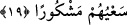

vakitte hâsıl olur. Bazılarını da taleb ile imtihan etmez. Aksine feyiz ona talebsiz ulaşır.
Buna göre birincisi talebdir, ama ondan bir şey hâsıl değildir. İkincisi talebdir ve ondan
bir şey hâsıl olur. Üçüncüsünde ise hâsıl olan bir şey vardır, ama taleb yoktur.
“Sonra da onu kınanmış” yerilmiş “ve kovulmuş” Allah’ın rahmetinden
uzaklaştırılmış “olarak cehenneme koyarız.” Dünyada kendisine âcilen verdiğimiz
şeylere karşılık onun yeri cehennem ve içinde çeşitli azap bulunan yerlerdir.
19. Kim de âhireti diler ve bir mü’min olarak kendine yaraşır bir çaba ile âhiret
için çalışırsa, işte bunların çalışmaları makbuldür.
“Kim de âhireti diler ve bir mü’min olarak” yâni beraberinde şirk ve yalanlama
bulunmayan sahih bir îman ile îman ettiği halde -ki aslolan odur- “kendine yaraşır bir
çaba ile âhiret için çalışırsa”, her kim de himmetinin yüksekliği sebebiyle âhiret
amelleriyle âhiret yurdunu ve âhiret yurdundaki ebedî nimetleri isterse ve bunun için
âhiret yurduna lâyık çaba sarf ederse, işte bunların çalışmaları makbuldür. Âhiret
yurduna lâyık çalışma ise Allah’ın emrettiğini yapmak, yasakladıklarından kaçınmaktır.
Yoksa kendi düşüncesiyle îcâd ettikleri yakınlaşma fiilleri değil. “ Lehâ = âhiret
için” ifâdesindeki lâmın faydası amellerde niyet ve ihlâsın muteber olduğunu göstermek
içindir.
“İşte bunların” âhireti istemek, bunun için güzel bir şekilde çaba sarfetmek ve îman
etmek olan bu üç şartı kendisinde toplayanların “çalışmaları makbuldür.” Amelleri
Allah nezdinde hüsn-i kabul ile makbul olur, sevab verilir. Âyette “makbûl” anlamında
“meşkûr” kelimesi kullanılmıştır. Allah Teâlâ’nın ‘şükrü’ kendisine itâat karşılığında
sevap vermektir. Amellerin makbûliyyetinin; meşkûr olmasının irâde veya amele değil
de çalışmaya bağlanması da meşkûr olmada esâsın çalışma ve gayret olduğunu
bildirmek içindir.
Bilesin ki Allah insanı dünya ve âhiretten mürekkeb olarak yaratmıştır. Dünya veya
âhiretten her bir cüzün gıdalanmak, kuvvetlenmek ve kendisiyle kemâle ermek için
bütününe meyli ve irâdesi vardır. İnsanın dünyevî cüzü olan nefiste cehennemin
derekelerine/uçurumlarına bir yol vardır. Uhrevî cüzü olan rûhunda cennetlerin
derecelerine bir yol vardır. Kalb ise her iki cüzden yaratılmıştır. Kalbin Rahmân’ın
lütuf ve kahr parmakları arasına doğru bir yolu vardır. Allah Teâlâ kahrının mazharı
olmasını istediği kimsenin kalbini kaydırır ve yüzünü dünyaya çevirir. O kimse de âcil
olanı, dünyayı ister. Onun nefsini dünya ile terbiye eder. Sonunda onu Hak’tan uzaklık
cehenneminin derekelerine ulaştırır ve ayrılık cehennemine koyar. Allah Teâlâ kimin de
lütfunun mazharı olmasını isterse kalbini düzeltir ve yüzünü yücelikler âlemine çevirir.